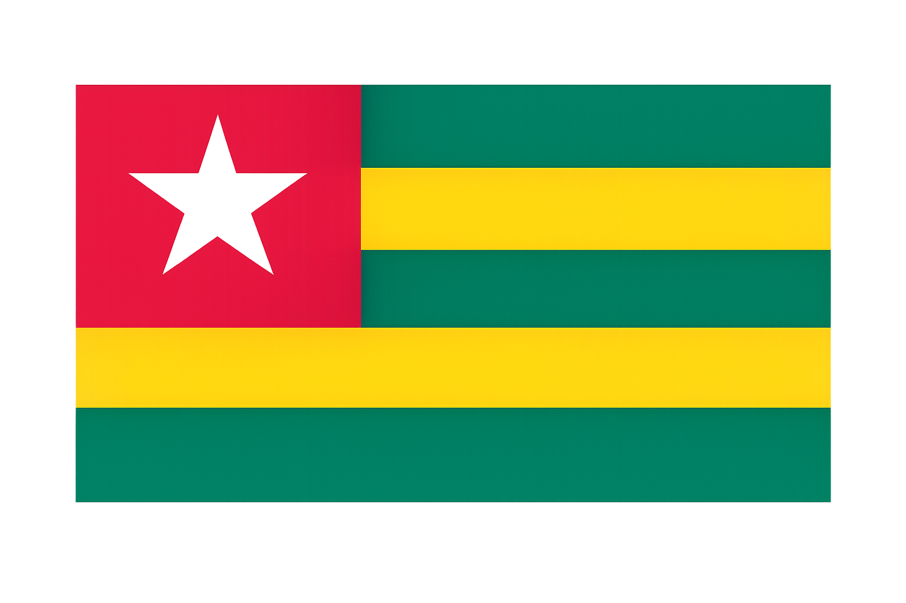

Koffi Bertrand Atoukoulou
About Me
My name is Koffi Atoukoulou, I'am born and raised in Togo. We are 8 in my family.I have a lot of ineterst and hobies such as football, Music, Dance.I am also a passionate web developer with a strong foundation in dynamic web technologies. I enjoy creating interactive and user-friendly websites that provide excellent experiences for users.

Lomé, Togo
Togo is a country located at the west region of Africa. he is bordered at the north by Burkina Faso, by East by Benin republic, at the west by Ghana, and at the south by the atlantic ocean, Togo is a peaceful country with a rich cultural heritage. Togo is also known as a touristic country.
